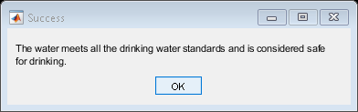
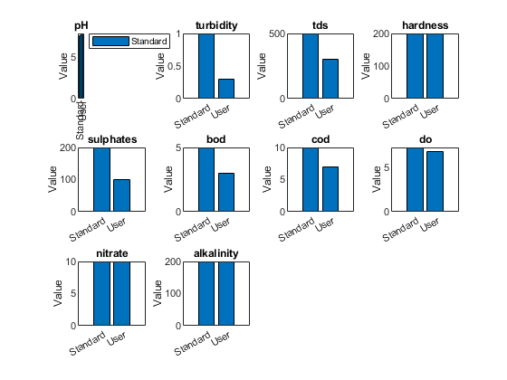
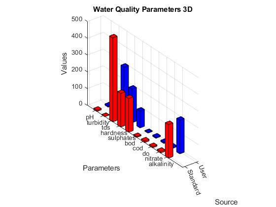

function get_water_data1()
standards = struct('pH', [6.5, 8.5], 'turbidity', 1, 'tds', 500, ...
'hardness', 200, 'sulphates', 200, ...
'bod', 5, 'cod', 10, 'do', [6.5, 8], ...
'nitrate', 10, 'alkalinity', 200);
while true
choice = menu('Select an option:', ...
'Import data from an Excel file', ...
'Enter data manually', ...
'Exit');
switch choice
case 1
[filename, pathname] = uigetfile({'*.xlsx','Excel files (*.xlsx)'},'Select an Excel file');
if isequal(filename,0) || isequal(pathname,0)
disp('User canceled the operation');
continue;
end
fullpath = fullfile(pathname, filename);
imported_data = readtable(fullpath);
water_data = table2struct(imported_data, 'ToScalar', true);
case 2
water_data = struct();
prompt = {'pH value:', 'Turbidity (NTU):', 'Total Dissolved Solids (mg/l):', ...
'Total Hardness (as CaCO3, mg/l):', 'Sulphates (mg/l):', ...
'BOD (mg/l):', 'COD (mg/l):', 'DO (mg/l):', ...
'Nitrate (mg/l):', 'Total Alkalinity (as CaCO3, mg/l):'};
dlg_title = 'Enter Data';
num_lines = 1;
default_data = {'', '', '', '', '', '', '', '', '', ''};
input_data = inputdlg(prompt, dlg_title, num_lines, default_data);
for i = 1:numel(input_data)
water_data.(lower(strrep(prompt{i}, ' ', '_'))) = str2double(input_data{i});
end
case 3
fprintf('Exiting the program.\n');
return;
end
save('water_data.mat', 'water_data');
is_safe = true;
if is_safe
msgbox('The water meets all the drinking water standards and is considered safe for drinking.', 'Success', 'modal');
result = 'Safe';
else
msgbox('The water does not meet one or more drinking water standards and is not considered safe for drinking.', 'Warning', 'modal');
result = 'Not Safe';
end
save_to_excel = questdlg('Do you want to save the data to an Excel file?', 'Save to Excel', 'Yes', 'No', 'No');
if strcmpi(save_to_excel, 'Yes')
filename = 'water_quality_data.xlsx';
data = struct2table(water_data);
data.Result = {result};
if isfile(filename)
writetable(data, filename, 'WriteMode', 'append', 'WriteVariableNames', false);
else
writetable(data, filename);
end
fprintf('Data has been saved to %s\n', filename);
end
plot_data(water_data, standards);
test_again = questdlg('Do you want to test another water sample?', 'Test Again', 'Yes', 'No', 'No');
if strcmpi(test_again, 'No')
break;
end
end
end
function value = get_valid_input(prompt, validation_func, max_attempts)
attempts = 0;
while attempts < max_attempts
input_value = input(prompt, 's');
if isempty(input_value)
fprintf('Invalid input. Please try again.\n');
attempts = attempts + 1;
continue;
end
value = str2double(input_value);
if isnan(value)
fprintf('Invalid input. Please enter a numeric value.\n');
attempts = attempts + 1;
continue;
end
if validation_func(value)
return;
else
fprintf('Invalid input. Please try again.\n');
attempts = attempts + 1;
end
end
error('Maximum attempts exceeded. Exiting program.');
end
function plot_data(water_data, standards)
parameters = {'pH', 'turbidity', 'tds', 'hardness', 'sulphates', 'bod', 'cod', 'do', 'nitrate', 'alkalinity'};
user_values = [water_data.pH, water_data.turbidity, water_data.tds, water_data.hardness, ...
water_data.sulphates, water_data.bod, water_data.cod, water_data.do, ...
water_data.nitrate, water_data.alkalinity];
standard_values = [mean(standards.pH), standards.turbidity, standards.tds, standards.hardness, ...
standards.sulphates, standards.bod, standards.cod, mean(standards.do), ...
standards.nitrate, standards.alkalinity];
figure;
for i = 1:length(parameters)
subplot(3, 4, i);
bar([standard_values(i); user_values(i)]);
set(gca, 'xticklabel', {'Standard', 'User'});
title(parameters{i});
ylabel('Value');
if i == 1
legend({'Standard', 'User'}, 'Location', 'northeastoutside');
end
end
figure;
plot_3d(water_data, standards);
end
function plot_3d(water_data, standards)
parameters = {'pH', 'turbidity', 'tds', 'hardness', 'sulphates', 'bod', 'cod', 'do', 'nitrate', 'alkalinity'};
user_values = [water_data.pH, water_data.turbidity, water_data.tds, water_data.hardness, ...
water_data.sulphates, water_data.bod, water_data.cod, water_data.do, ...
water_data.nitrate, water_data.alkalinity];
standard_values = [mean(standards.pH), standards.turbidity, standards.tds, standards.hardness, ...
standards.sulphates, standards.bod, standards.cod, mean(standards.do), ...
standards.nitrate, standards.alkalinity];
bar3([standard_values; user_values]', 0.4);
set(gca, 'xticklabel', {'Standard', 'User'});
set(gca, 'yticklabel', parameters);
zlabel('Values');
xlabel('Source');
ylabel('Parameters');
title('Water Quality Parameters 3D');
colormap([1 0 0; 0 0 1]);
end
Warning: Ignoring extra legend entries.
  